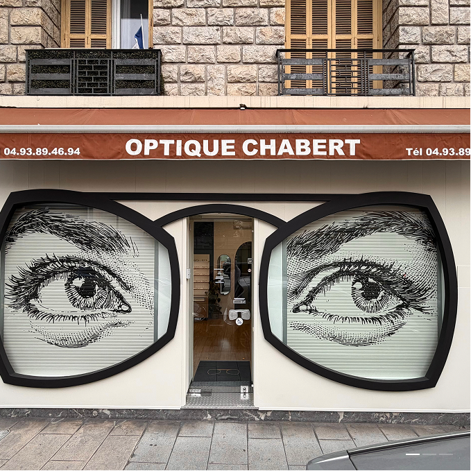
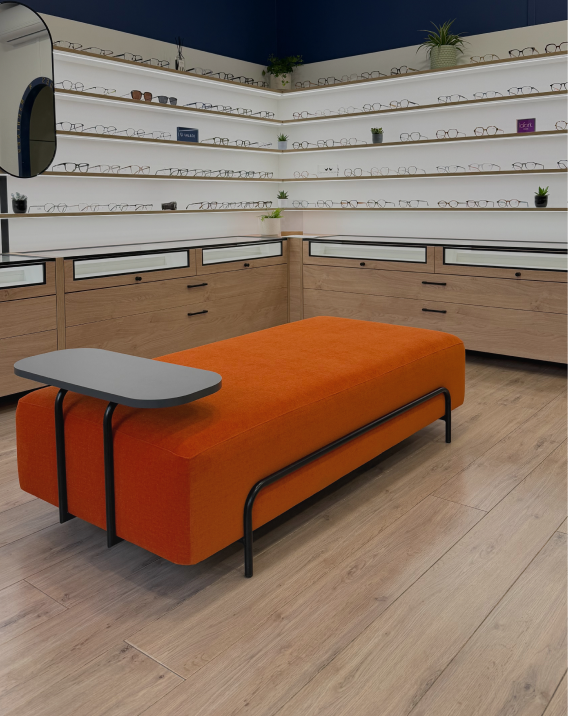
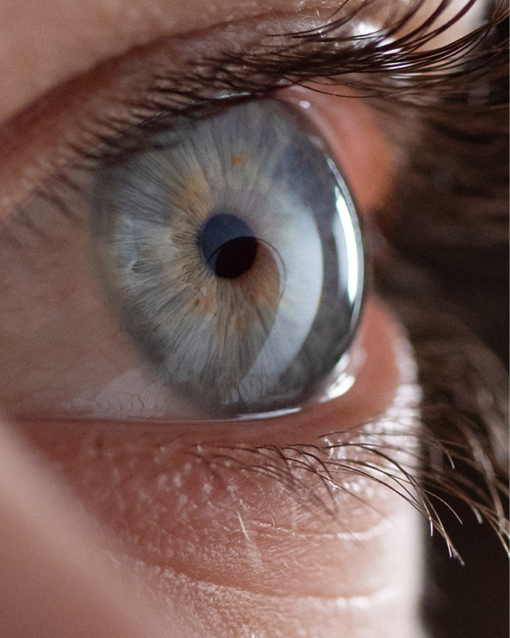

Montures sélectionnées pour leur caractère —
du classique intemporel aux pièces les plus audacieuses.
Made in France & Japan.



Le 28 rue Arson, à Nice.
Forte d'une expertise approfondie en optique et d'un regard moderne sur le métier, Élodie sélectionne chaque monture avec exigence et accompagne chaque client avec précision. Son approche mêle technicité, esthétique et expérience personnalisée.
Fondateur d'Optique Chabert, Guy Chabert pose les bases d'un savoir-faire exigeant et d'une relation client fondée sur la confiance. Visionnaire, il développe une optique de proximité, alliant précision technique et sens du détail.
Bernard Chabert reprend le flambeau et fait évoluer la maison. Il modernise l'offre, développe la sélection de montures et affirme l'identité de l'enseigne, tout en conservant l'exigence et l'esprit familial qui font sa réputation.
Une nouvelle génération s'inscrit dans l'histoire. Élodie Julliot reprend Optique Chabert avec une vision contemporaine : allier tradition, expertise et innovation pour répondre aux attentes d'aujourd'hui.
Chez Optique Chabert, chaque monture est choisie à la main. Nous travaillons exclusivement avec des créateurs artisanaux français et japonais. Des maisons qui fabriquent encore à l'ancienne, avec des matières nobles et un soin du détail que la grande distribution ne connaît pas.
Des pièces rares, pour chaque visage, chaque caractère.
Voir nos montures« Un accueil exceptionnel et des conseils vraiment personnalisés. Élodie prend le temps d'expliquer chaque détail — on repart avec des lunettes qui nous ressemblent vraiment. »
« Spécialiste des lentilles de nuit, Optique Chabert m'a changé la vie. Plus besoin de correction en journée. Un suivi sérieux et bienveillant depuis le début. »
« La sélection de montures est unique à Nice — des pièces introuvables ailleurs, françaises et japonaises. On sent immédiatement la passion du métier. »